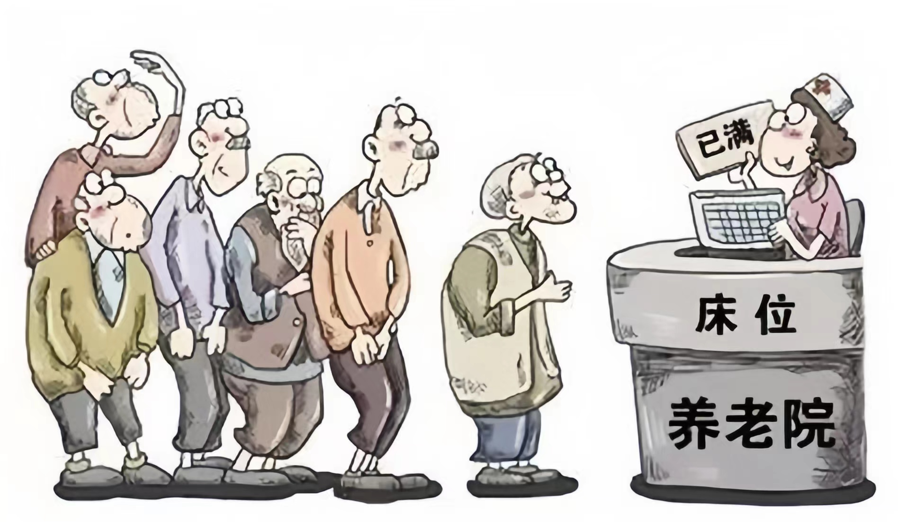

随着老年人口的增加，养老金和社会保障制度的负担也随之增加。 这些制度需要大量资金才能维持，而且随着人口老龄化的加剧， 资金需求将越来越高。
晚 景 拮 据
薄暮时节，经济的压力如同秋风中的落叶，轻轻飘落却重重叠叠。
在老龄化的浪潮中，社会经济的船帆正遭受着前所未有的挑战。
银发浪潮涌，养老金与社会保障如超载之舟，艰难破浪前行。
医疗之河渴望甘泉，基础设施与公共服务需求如秋叶般增多，政府财舟承载重负。
家庭港湾亦受波及，养老之责如落叶纷飞，医疗费用如阴霾笼罩，
收入之泉渐趋干涸，经济之舟在风雨中摇曳。
老龄化问题对社会经济的影响
养老金和社会保障制度的压力
医疗和医疗保险的压力
老年人患病的概率较年轻人高，因此医疗和医疗保险也面临巨大的压力。老年人需要更多的医疗保健服务和药品，这会导致医疗保险支出的增加。
基础设施和公共服务的压力
老年人需要更多的基础设施和公共服务，例如护理机构、健身房、文化活动中心等，政府需要大量投资来满足这些需求，随着老年人口的不断增加，这些服务的需求也在持续增长。
老龄化问题对家庭经济的影响
家庭养老负担的增加
随着老年人口的增加，家庭需要承担越来越多的养老负担。许多家庭需要把一部分收入用于支付老人的医疗费用、护理费用等，这使得家庭的经济压力越来越大。

老年人医疗费用的增加
老年人的医疗费用较高，这会对家庭的经济状况产生负面影响。特别是那些没有购买医疗保险的家庭，他们需要承担更高的医疗费用，可能会给家庭带来不小的财务压力。
家庭收入和经济状况的影响
随着老年人口的增加，家庭的经济状况可能会受到影响。家庭中的老年人大多已经退休或无法工作，他们通常需要依靠养老金、退休金和子女的经济支持来维持生计。
应对老龄化带来的经济压力的方法

加强社会保障和养老金制度
为缓解老龄化影响，政府需加固社会保障和养老金体系，确保老年人获得必要的生活支持。除了提供充足的养老金，还应通过补贴或提高退休金等方式，减轻老年人经济压力。此外，政府应鼓励发展养老金融产品与服务，帮助老年人进行有效的退休规划，确保他们享有稳定而有尊严的晚年生活。
发展健康产业和医疗保险制度
随着老年人口的增加，老年人的医疗保健需求也日益增长。政府应当通过加强医疗保障制度的建设，提高医疗保险的覆盖率和保障水平，以降低老年人的医疗支出。这包括扩大医疗保险的支付范围，提高报销比例，以及推动医疗资源的合理分配和利用，确保老年人能够获得及时、有效的医疗服务。
推动银发经济发展
银发经济聚焦于老年人群体，提供定制化的产品和服务。通过满足老年人在健康管理、监护和心理慰藉等方面的需求，不仅提升他们的生活质量，还能创造新的经济增长和就业机会。政府可通过政策支持，推动老年产业的技术创新和服务升级，进一步激发市场活力。